#8545 Rebel in the Rye


 IMDB-Wertung: 6.6 / 10
IMDB-Wertung: 6.6 / 10  Tomatometer: 28
Tomatometer: 28  Metascore: 46
Metascore: 46 
J.D. Salinger kämpft seit den NY 1930er Jahren nur damit, den eigenen Weg zu finden. Der Wunsch nach Freiheit, Liebe, Sex und einzigartigen Erfahrungen sollen ihm den ersten Stein auf den langen Weg zu der Wunschkarriere als Autor für Kurzgeschichten eröffnen. Doch erst als JD an der Universität of Columbia auf den Professor Whit Burnett trifft, kann er als Mentor die Energie, das Verlangen und das Ego des jungen Schreiberlings in die richtigen schriftstellerischen Bahnen lenken.
Jahr: 2017
Dauer: 109 Minuten
FSK:
Land: USA Studio: IFC FilmsTonspuren: DTS - ,
Untertitel: Deutsch,
Auflösung: 1080p (1920x1040) Größe: 5427 MB
Genre: Drama, Krieg, Liebe, Biographie
Regisseur: Danny Strong
Drehbuch: Danny Strong
Soundtrack: Bear McCreary
Darsteller:
- 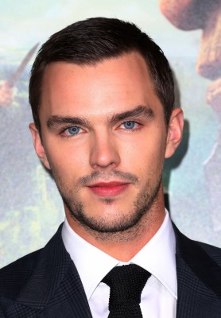 Nicholas Hoult als Jerry Salinger
 Kevin Spacey als Whit Burnett
Kevin Spacey als Whit Burnett- 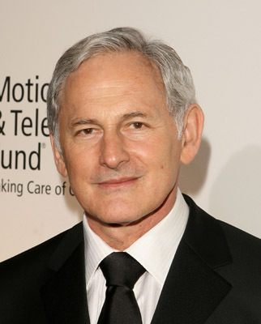 Victor Garber als Sol
- 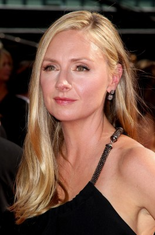 Hope Davis als Miriam
- 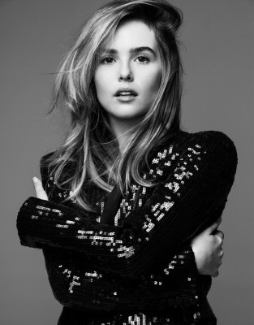 Zoey Deutch als Oona O'Neill
- 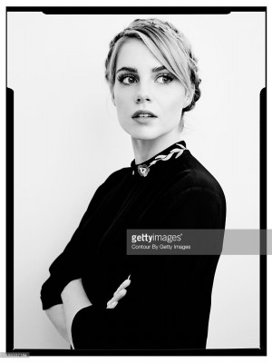 Lucy Boynton als Claire Douglas
- 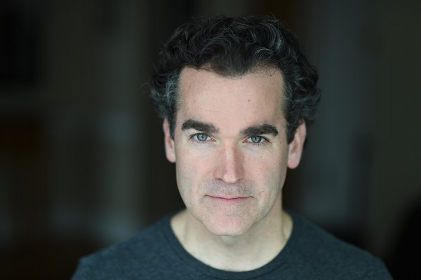 Brian d'Arcy James als Giroux
- 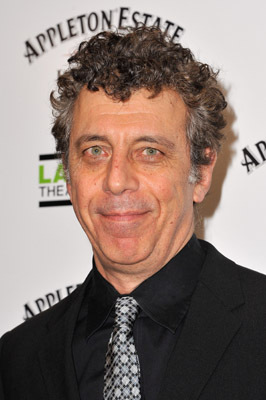 Eric Bogosian als Harold Ross
- 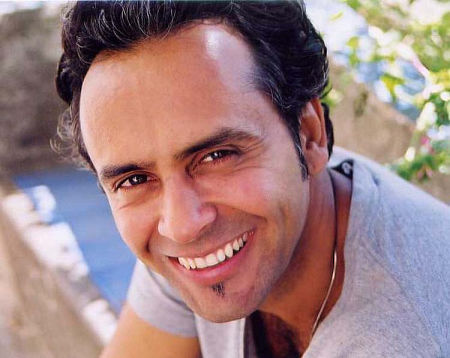 Bernard White als Swami Nikhilananda
- 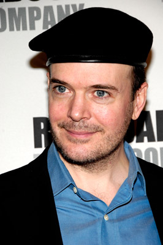 Jefferson Mays als William Maxwell
- 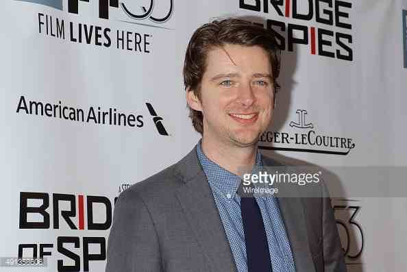 Will Rogers als Herb Kaufman
 Sarah Paulson als Dorothy Olding
Sarah Paulson als Dorothy Olding- 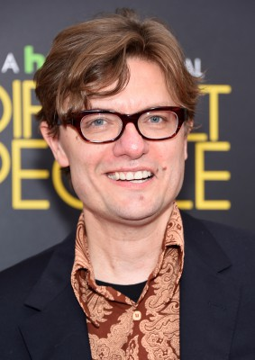 James Urbaniak als Gus Lobrano
- Keenan Jolliff als Clay Miller
- Caitlin Mehner als Blythe Chaucer
- Francesca Root-Dodson als Carol Flourentine
- Celeste Arias als Doris Salinger
- Anna Bullard als Sylvia
- Tim Dougherty als Truman Capote
- Kevin Mambo als Piano Player Ernie
- Naian González Norvind als Queens Girl
- Dana Drori als Stacey Pierce
- Amy Rutberg als Betsy Hopkins
- Alyssa May Gold als Pearl
- Devin Harjes als Catcher Fan
- David Berman als Dr. Sam Radford
- 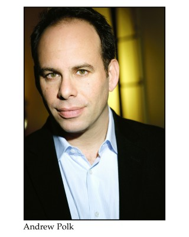 Andrew Polk als Army Therapist
- Jimmy Smagula als John Woodburn
- Jenny Ashman als Bea Stein
- Evan Hall als Rory Johnson
- 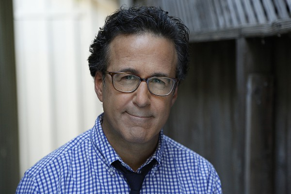 Ron Fassler als Pastor
- 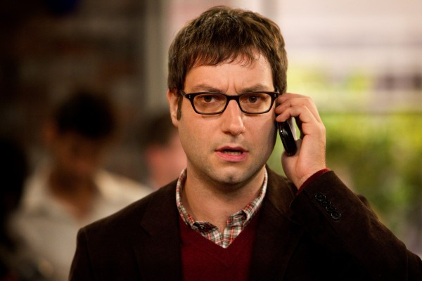 Adam Busch als Nigel Bench
- Kristine Froseth als Shirley Blaney
- John Carrafa als Choreographer
- David Strauss als Hall Proctor
- Nikolaos Argyros als Soldier (uncredited)
- Blanca Camacho als (uncredited)
- Austen Eisenberg als Child (uncredited)
- 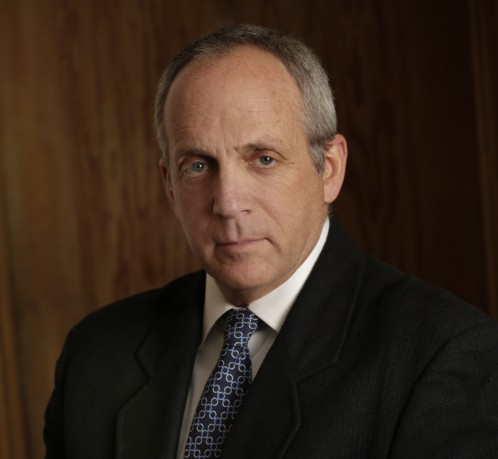 Neil Fleischer als Stork Club Pianist (uncredited)
- Matt Gorsky als Benny, the Clarinetist (uncredited)
- Sydney Hargrove als J.D. Salinger's Cousin (uncredited)
- Kelsey Rose Healey als Youth Group Teen (uncredited)
- Alana Kyriak als Stork Club Dancer (uncredited)
- Doris McCarthy als Passerby (uncredited)
- Jalina Mercado als J.D. Salinger's Cousin (uncredited)
- Michael Metta als Soldier (uncredited)
- Kate Rodman als Giroux Secretary (uncredited)
- Matthew Rosvanis als College Student (uncredited)
- Luke David Young als Pvt. Daniel Fisher (uncredited)
- Frankie Zing als Soldier (uncredited)
Datei: X:\2017(N-Z)\Rebel in the Rye (2017, FSK, 1920x1040).mkv seit 22.03.2018
Festplatte: HD 2017(A-Z)-2018(A-F)
 Es gibt insgesamt 170 Filme in der Gruppe '2017(N-Z)'
Es gibt insgesamt 170 Filme in der Gruppe '2017(N-Z)'